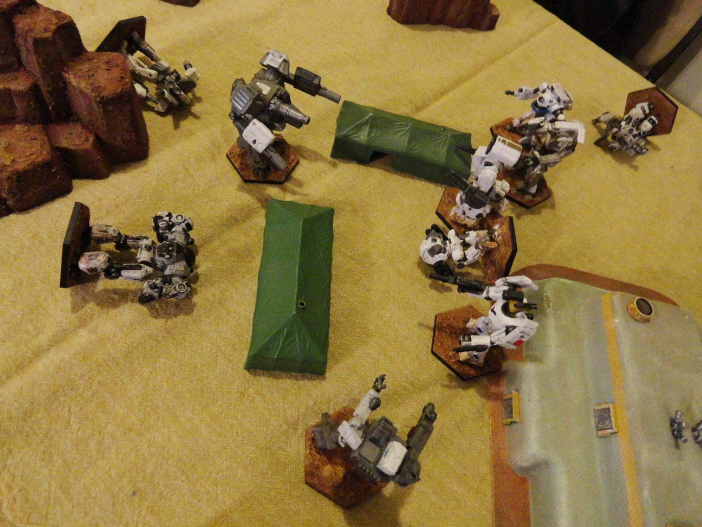

Two players · Any listed game size · 6 rounds · Version 0.3
Hold three relay sites and score points each round. Use the core rules for objective control.
Set up


Agree on a game size. This layout uses 48 × 48 inches; for Large or Grand Battles, apply the wider battlefield setup. Measure coordinates from the southwest corner: x runs east, y runs north. Mark each terrain rectangle as listed.

| Feature | Location |
|---|---|
| West objective | Point (10, 24) |
| Central objective | Point (24, 24) |
| East objective | Point (38, 24) |
| West fieldworks | x 7–10, y 21–27; objective on the eastern edge |
| East woods | x 35–41, y 21–27 |
| Southern woods | x 15–21, y 11–17 |
| Northern woods | x 27–33, y 31–37 |
| Southwest blocking structure | x 5–11, y 11–17 |
| Northeast blocking structure | x 37–43, y 31–37 |
| Southeast rubble | x 31–37, y 13–19 |
| Northwest rubble | x 11–17, y 29–35 |
Deploy south in y 0–6 or north in y 42–48, with bases entirely inside the zone. Use the normal side-choice and alternating deployment rules. Choose sides after placing terrain; leave the center objective in open ground. Infiltrate follows its equipment rule after ordinary deployment.
Vehicles and ’Mechs can contest the western site from outside the fieldworks if their centers are within 3 inches. They cannot enter the fieldworks.
Score and win
At the end of rounds 2–6, score 1 point for each objective you control. Contested objectives score nothing. Round 1 scores nothing. There are 15 points available across both players.
After round 6, the higher score wins. Equal scores are a draw; kills do not break ties.
Wiping out an army does not end the game. Keep playing and scoring. If neither army has any units left, use the core early-ending rule.
Play again
Keep the armies and map, but put each army on the opposite edge. Players may also exchange armies. Roll initiative normally.
Compare infantry in fieldworks, infantry in woods, and units fighting over the open center. Note which units changed control, even if they dealt no damage.